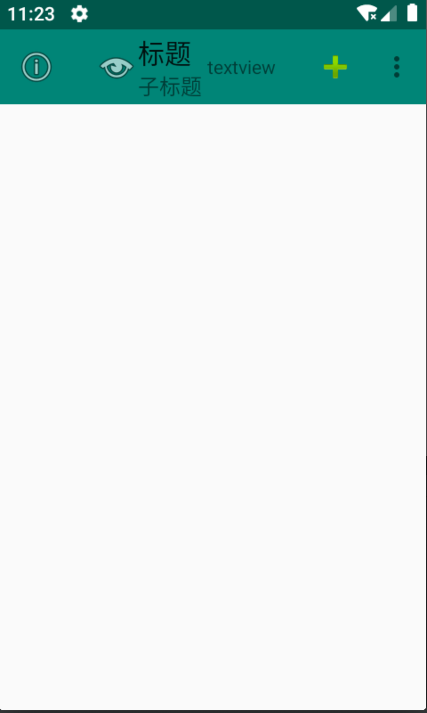
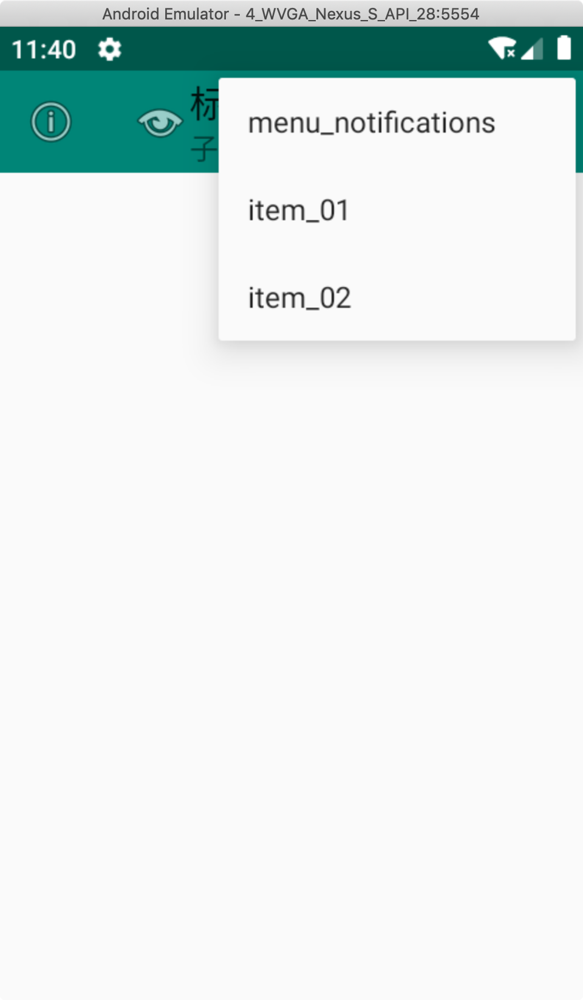
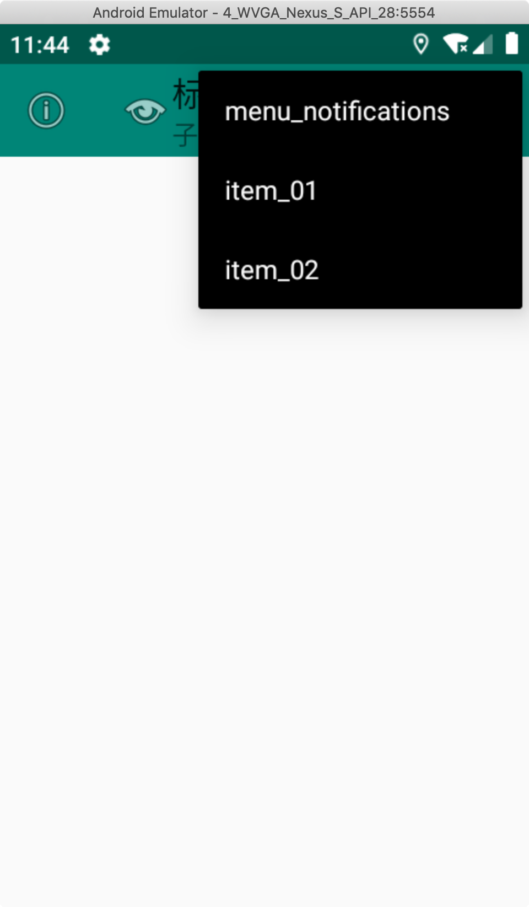
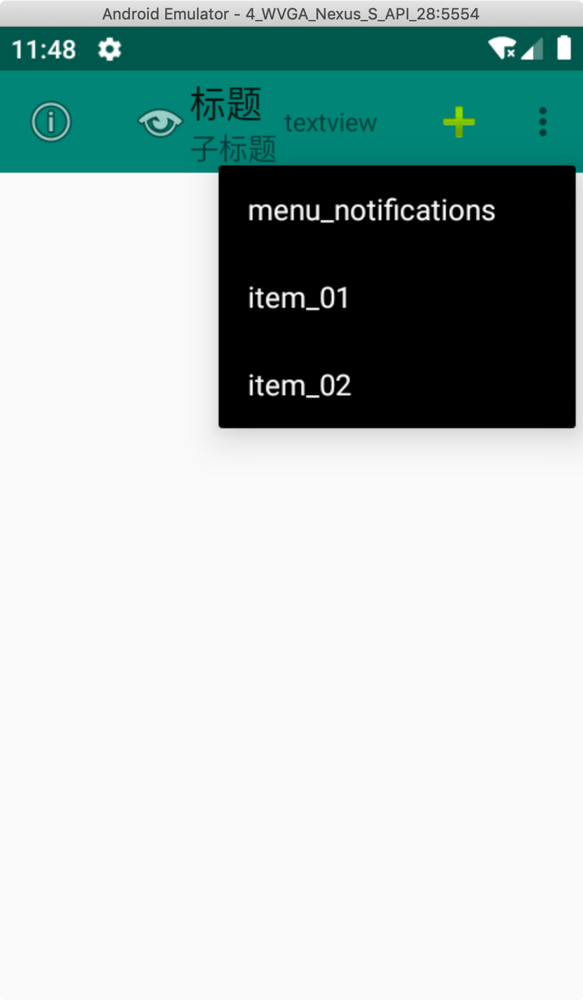
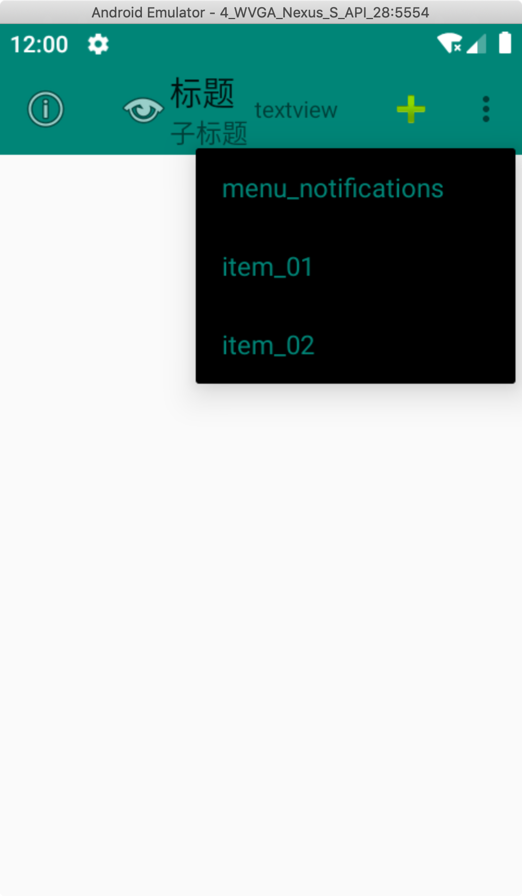

初识Toolbar
Toolbar 是在 Android 5.0 开始推出的一个 Material Design 风格的导航控件 ，Google 非常推荐大家使用 Toolbar 来作为Android客户端的导航栏，以此来取代之前的 Actionbar 。
与 Actionbar 相比，Toolbar 明显要灵活的多。它不像 Actionbar 一样，一定要固定在Activity的顶部，而是可以放到界面的任意位置。除此之外，在设计 Toolbar 的时候，Google也留给了开发者很多可定制修改的余地，这些可定制修改的属性在API文档中都有详细介绍，如：
- 设置导航栏图标；
- 设置App的logo；
- 支持设置标题和子标题；
- 支持添加一个或多个的自定义控件；
- 支持Action Menu；
使用Toolbar
前面提到 Toolbar 是在 Android 5.0 才开始加上的，Google 为了将这一设计向下兼容，自然也少不了要推出兼容版的 Toolbar 。为此，我们需要在工程中引入 appcompat-v7 的兼容包，使用 android.support.v7.widget.Toolbar 进行开发。但是由于support库现在google团队已经不在维护了，最新版本好像是28点多，已经迁移到了AndroidX，所以该篇文章使用AndroidX，只是包名相对的变化了，使用和v7包没有多大变化。
先来看看运行效果

按照效果图，从左到右分别是我们前面提及到的 导航栏图标、App的logo、标题和子标题、自定义控件、以及 ActionMenu 。接着，我们来看下布局文件和代码实现。
首先，在布局文件 activity_main.xml中添加进我们需要的 Toolbar 控件
1 |
|
接着创建一个toolbar_menu.xml菜单项
1 |
|
我的activity继承自AppCompatActivity，并不是原生sdk内部的，因此不能使用
android:showAsAction，否则会报错。所以需要使用自定义的命名空间app。ifRoom表示有空间则显示，never表示从不显示，而是会通过overflowwindow显示。
最后在MainActivity中调用
1 | public class MainActivity extends AppCompatActivity { |
更改主题：
为了能够正常使用ToolBar，我们需要隐藏原来的ActionBar，这个可以在主题中修改
1 | <item name="windowNoTitle">true</item> |
或者继承某个父类:Theme.AppCompat.Light.NoActionBar
也可以在代码中
如果是AppCompatActivity
1 | supportRequestWindowFeature(Window.FEATURE_NO_TITLE); |
如果是Activity
1 | requestWindowFeature(Window.FEATURE_NO_TITLE); |
最后运行就可以有上面图中的效果啦。
注意事项
如果你想修改标题和子标题的字体大小、颜色等，可以调用setTitleTextColor、setTitleTextAppearance、setSubtitleTextColor、setSubtitleTextAppearance 这些API；
自定义的View位于 title、subtitle 和 actionmenu 之间，这意味着，如果 title 和 subtitle 都在，且 actionmenu选项 太多的时候，留给自定义View的空间就越小；
导航图标 和 app logo 的区别在哪？如果你只设置 导航图标（ or app logo） 和 title、subtitle，会发现 app logo 和 title、subtitle 的间距比较小，看起来不如 导航图标 与 它们两搭配美观；
Toolbar 和其他控件一样，很多属性设置方法既支持代码设置，也支持在xml中设置
其他样式修改
修改Toolbar popup menu样式
点击右上角的三个点，会弹出一个popup menu，如下所示：

可以看到弹出菜单的样式是白底黑字，那么有没有办法改变它的背景颜色呢，使得菜单显示为黑底白字。这肯定是有的。
在styles.xml文件中新建一个主题
1 | <!-- toolbar弹出菜单样式 --> |
可以看到这个主题的parent是直接继承自ThemeOverlay.AppCompat.Dark，是支持包的一个主题，并且我们在内部声明了android:colorBackground这个属性，我们只要更改这个属性就能变更菜单的背景颜色了。接下来我们在布局文件中引入这个主题，这也很简单，为toolbar添加额外的属性如下:
1 | app:popupTheme="@style/ToolbarPopupTheme" |
运行效果：

修改Toolbar popup menu 弹出位置
在上图看到，弹出的菜单的位置是过于偏上的，我们可以修改它的位置，让它在toolbar的下面，这样看起来也美观一些：
修改styles.xml文件，添加
1 | <!-- toolbar弹出菜单样式 --> |
布局文件中引用该主题
1 | app:popupTheme="@style/ToolbarPopupTheme" |
运行效果：

修改Action Menu Item 的文字颜色
在styles.xml文件中，在popup menu的主题添加：
1 | <!-- toolbar弹出菜单样式 --> |
布局文件中引用该主题
1 | app:popupTheme="@style/ToolbarPopupTheme" |
运行效果：

踩坑
设置监听事件不生效
看一下代码
1 | private void initToolbar(){ |
代码正常设置监听但是就是监听事件就是没有触发，查询后，监听事件必须在setSupportActionBar(mToolbar);之后设置。
1 | private void initToolbar(){ |
调换一下位置即可正常运行。
总结
以上都是一些基本的使用，Toolbar控件的使用还是很灵活的，还有很多一些高级技巧，比如配合上状态栏变成沉浸式，或者配合CoordinatorLayout等实现更炫的效果。